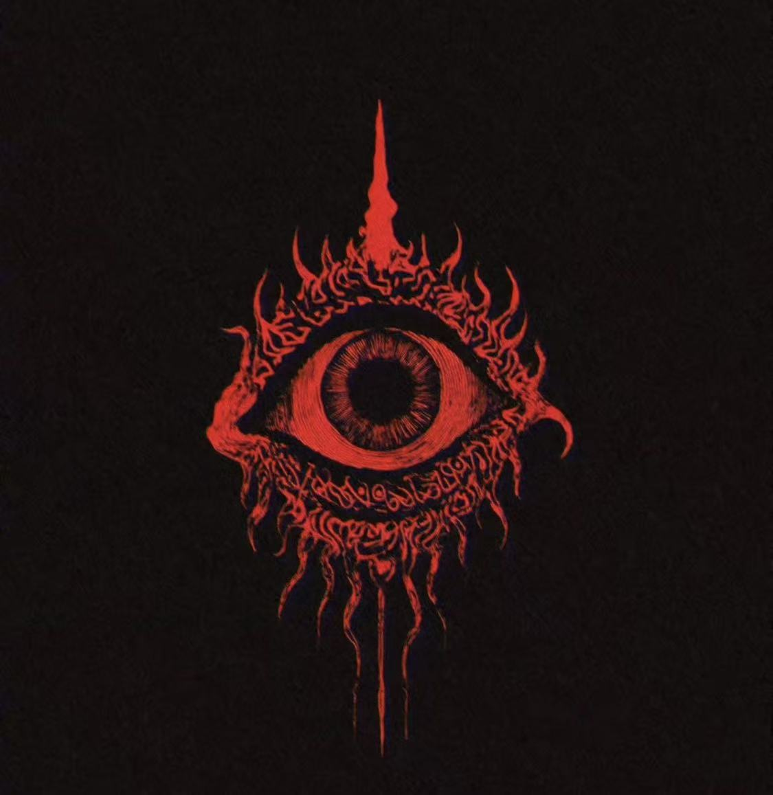

世界终结，你选择看到什么？
你是唯一的幸存者（是吗？）
让我听到你内心的回响吧。

开始旅程
1/5
寂静。
寂静。
寂静。
寂静长得像一条上吊的绳索。
你从绳索的另一端醒来，看见自己的影子。
它在做什么？
它手脚并用，试图爬进你的身体取代你。
你把它撕成两半。
它安静地贴在你脚下。
在被遗弃的世界里，你们相依为命。
它站在你面前，注视你。
你灵魂的先知——准备好解答所有谜题。
地上空无一物。
你清楚：光源不集中的地方，影子只是幻觉。
回头
继续前行
2/5
你往前走。
整个世界被一只手掌捏碎，到处都是断壁残垣。
你穿过空街。在尽头，你闻到一股气味。
这是最后一群人类留下的。
它是——
硫磺味。
人类倾尽所有智慧和勇气，负隅顽抗。
那一刻的光芒，短暂得像奇迹。
花的残香。
幸存者为他们深爱的死者铺满鲜花。
一场盛大而无望的追悼。
木头燃烧后的气息。
人们围绕篝火席地而坐。
他们最后一次，讲述这个种族延续了千年的故事。
血味。
危机来临，人类相互猜忌、撕咬。
一切已经结束。这里只剩气味。
回头
继续前行
3/5
你继续走。
你已经不记得走了多久。
脚底开裂，血在趾间慢慢变冷。
你穿过一座又一座萧索的城邦。
最终来到海与大陆的交界。
你眺望地平线。
你看到了另一个幸存者。
消瘦，苍白，像个没被擦掉的漆点。
他跪在地上，用碎砖垒起墙。
重复，重复，重复。至死方休。
一处营地。
残破的帐篷遍地，折断的钢管像裸露的骨骼。
它们的主人如此顽固：
他们相信这片土地值得驻守。
即使代价是尸骨无存。
一具庞大的尸体。
像多个物种拼接而成——象、鲸，表面铺满甲虫。
风推着它缓慢滑行。
死亡与自由在此刻交织。
海浪在酝酿着什么。
旋涡像缓慢睁开的眼睛。
这个星球将露出它真正的面目。
天真，残忍，从未被驯服。
回头
继续前行
4/5
在你接近海岸之前，天空忽然传来一声巨响。
你被迫仰起脖颈。
很久以前，某个祖先第一次抬头。
文明由此开始。
但你在此刻看到的，并不是星空。
天空裂开一道豁口，缝隙像一张讪笑的脸。
这场毁灭，不过是一场兴之所至的玩笑。
阴云密布。
雷阵雨即将降临。
天空也会为亡魂哭泣吗？
火焰在天穹蔓延。
光像熔化的金属，倾泻。
在炽白的深处，有东西正在诞生。
天空成为土地的倒影，澄明如镜。
你在其上看到了你自己。
恒久地、孤独地矗立。
回头
继续前行
5/5
祂降临了。
世界再次扭曲。
你无法辨别祂的形态，只能感到祂的存在。
祂离你如此之近，如此慷慨！
祂允许你带走一样东西。
代价是——你的生命。
一枚胚胎。
漂浮在透明容器里。
祂告诉你：
这是人类的第一代。
这个物种会重新开始，带来：火，战争，叹息。
以及亲吻。
一片原始海域。
没有陆地，没有名字。
世界回到海洋的子宫。
潮汐缓慢呼吸；所有历史在水下溶解。
太阳。
它离你越来越近。
灼烧。
灼烧。
灼烧。
光与热无穷无尽，这场爆炸无法用任何造物比拟。
一只眼睛。祂的眼睛。
你的肉身消散，意识接管祂的视野。
星系诞生。文明灭绝。
无论是真理还是虚妄，你将永远不能合上眼睑。
回头
抵达
生成截图
轮回